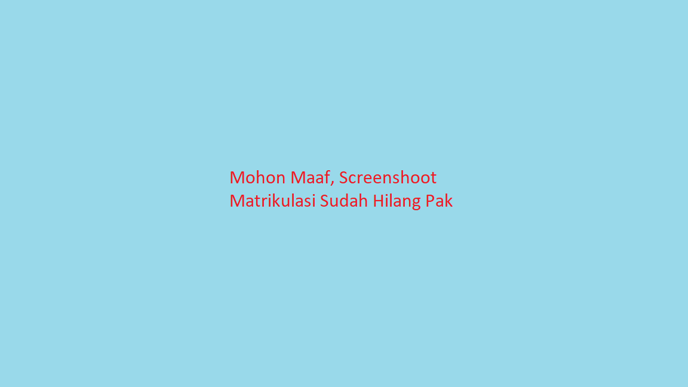

Matrikulasi Udinus
Apa sih Martikulasi itu ?
Matrikulasi merupakan sebuah program penyetaraan atau pengenalan kampus yang di khususkan untuk calon mahasiswa baru Udinus. Matrikulasi ini bersifat wajib untuk diikuti oleh mahasiswa baru, termasuk pada kali ini saya mengikuti matrikulasi yang dimulai dari Senin, 16 Juni 2021 hingga saat ini yakni Rabu, 7 Juli 2021.
Dengan adanya Pandemi Covid-19, tentunya kegiatan matrikulasi tidak bisa dilaksanakan dengan tatap muka seperti tahun tahun sebelunya. Walaupun demikian Udinus tetap memberikan realisasi kegiatan matrikasi melalui konsep Daring. kegiatan matrikulasi diadakan melalui beberapa metode dari mulai Channel TV TVKu yan gtelah bekerja sama dengan pihak udinus, melalui siaran langsung pada youtube, serta dilanjutkan dengan video conference lain seperti Zoom, Gmeet.
Dari kegiatan matrikulasi yang berlangsung pada Senin, 16 Juni 2021 hingga Rabu, 7 Juli 2021, berikut ini adalah materi - materi yang saya dapatkan pada saat mengikuti kegiatan Matrikulasi 2021,
Beberapa Materi Pada Saat Matrikulasi
- Bebras
- Computational Thinking dan Gerakan PANDAI
- Perubahan Peradaban
- Literasi Informasi
- Internet untuk Literasi Informasi
Selain materi tersebut, kegiatan matrikulasi juga mengenalkan beberapa web penunjang pembelajaran di udinus, antara lain
Website Udinus :
- Kulino
- Siadin
Selain materi dan juga pengetahuan website udinus, saya juga berlatih dari tugas yang diberikan, adapun challange yang saya dapatkan sebagai berikut,
Challange / Task :
- Dasar HTML
- Dasar CSS
- Tag HTML
- Macam List dalam HTML
- Macam Model Box dalam HTML
- Macam CSS (Inline, Internal, Eksternal)
- Membuat Website Sederhana
Tentu banyak sekali ilmu yang saya dapatkan selama kegiatan Matrikulasi 2021 yang akan menjadi bekal kedepannya untuk menempuh pendidikan di Udinus tercinta ini. Saya pribadi menguncapkan banyak Terimakasih kepada dosen yang telah membimbing saya pada kegiatan Matrikulasi 2021 ini, khususnya kepada Ibu Nurul Annisa Sri Winarih, S.Kom, M.Cs selaku dosen pembimbing saya pada kelas / kelompok Matrikulasi-A11-MA1108.
Foto Kegiatan Matrikulasi
Foto Kegiatan Matrikulasi